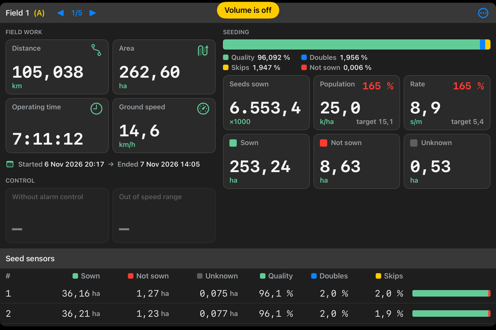

Statistik
Die Statistik von fünf Schlägen — Strecke, Fläche, Zeit, besäte und unbesäte Fläche, Qualität, Dichte — und wie Sie einen Schlag wählen oder seine Statistik zurücksetzen.
„Statistik“ führt Buch über die Arbeit auf fünf Schlägen. Einer davon ist aktiv: Alles, was die Maschine sät, wird auf ihn gezählt.

- Der Schlag auf dem Bildschirm. (A) kennzeichnet den aktiven Schlag.
- ◄ ► und 1/5 — die anderen vier Schläge ansehen.
- Das Menü … — „Feld wählen“ und „Statistik zurücksetzen“. Weiter unten
- „Feldarbeit“ — „Strecke“, „Fläche“, „Betriebszeit“ und die mittlere „Fahrgeschw.“.
- Wann die Arbeit auf diesem Schlag „Start“ und „Ende“ hatte.
- „Überwachung“ — „Ohne Alarmüberwachung“ und „Außerhalb Geschw.-Bereich“. In dieser Version zeigen beide einen Strich.
- Der Qualitätsbalken der „Aussaat“: „Qualität“, „Doppel“, „Fehlstelle“ und „Ungesät“ als Anteile eines Balkens (Einzelkorn).
- „Körner gesamt“ (in Tausend), „Dichte“ und „Saatmenge“: der Istwert groß, darunter der Sollwert und der Istwert in Prozent des Sollwerts — rot jenseits der Toleranz.
- „Gesät“, „Ungesät“, „Unbekannt“ — in Hektar, wenn eine Geschwindigkeit vorliegt; sonst als Anteile der Zeit ohne Geschwindigkeit.
- Die Reihen einzeln — dieselben Zahlen für jeden Sensor („Kornsensoren“, danach die Düngersensoren).
Was der Block „Aussaat“ zeigt, hängt vom Überwachungsmodus der Gruppe ab. Bei Einzelkorn erhalten Sie den Qualitätsbalken, die gesamten Körner, die Dichte und die Sollmenge. Bei Durchfluss und Hybrid erhalten Sie die drei Mengen „Gesät“, „Ungesät“ und „Unbekannt“. Bei zwei Gruppen im Modus Einzelkorn zeigt ein Seitenschalter im Titel des Blocks die andere Gruppe.
Einen Schlag wählen oder zurücksetzen
Holen Sie mit ◄ ► den gewünschten Schlag auf den Bildschirm.
Tippen Sie auf … rechts vom Titel.
Wählen Sie:
- „Feld wählen“ — dieser Schlag wird der aktive. Enthält er bereits Statistik, sagt die App zuerst „Daten löschen, um dieses Feld zu wählen!“: „Ja“ macht ihn aktiv, mit Zählern bei null.
- „Statistik zurücksetzen“ — die App fragt „Sind Sie sicher?“; „Ja“ setzt die Statistik dieses Schlags auf null.
„Feld wählen“ wird nur angeboten, wenn der Schlag auf dem Bildschirm nicht der aktive ist.
Ihre Maschine tut etwas, das diese Seite nicht beantwortet? Schreiben Sie an support@agriwelt.com — es antwortet ein Ingenieur.